サワードウを焼く
サワードウを焼く
素人が3ヶ月かけてまともなサワードウを焼けるようになった。まだまだ色々改良する余地はありますが、これまで理解したこととレシピをまとめます。
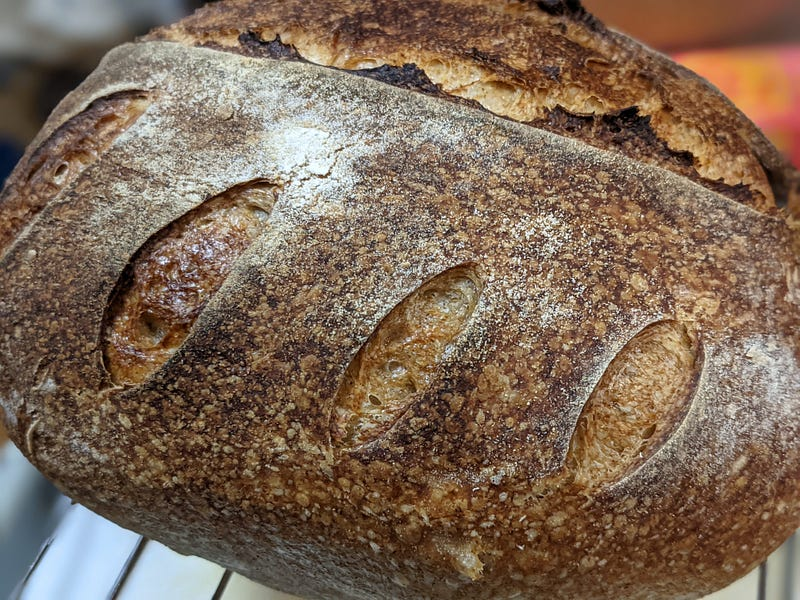
動機
以前も書きましたがパンづくりを始めた理由はシンプルで、日本のパンはフニャフニャなのが多く、堅いパンが好きな自分からすると供給が安定しないため、それならいっそ自分で作れるようになればいいじゃん、という流れです。
材料
材料は基本的に粉（全粒粉と強力粉）、塩、水だけです。あとは微生物と時間がどうにかしてくれます。
スターター（元種）
全粒粉150g～
水150g～
スターター
元種20g
水40g
全粒粉40g
パン生地
スターター100g
全粒粉150g
強力粉350g
塩10g
水350g
米粉適量（打ち粉に使います）
機材（必須）
ゴムベラ
もろもろ混ぜたりボウルからはがすときに便利。
タイガークラウン へら・スパチュラ 白 57×264×14mm ウィズ シリコーンゴムヘラ 大 シリコーンゴム、芯棒:ステンレス鋼 日本製 1610amzn.to
スクレーパー
平らな場所でパン生地がくっついた場合にそこからはがすためや、パン生地を「持つ」のに重宝します。金属製のものに憧れますが、まぁふつうに樹脂製で問題ないでしょう。
オンライン通販のAmazon公式サイトなら、貝印 KAI スクレッパー Kai House Select エンボス レッド 日本製 DL6287を…amzn.to
計量器
ボウルの重さもあるので最低限1㎏測れるくらいの機能は欲しいです。タニタのものはもう長年重宝してます
オンライン通販のAmazon公式サイトなら、タニタ クッキングスケール キッチン はかり 料理 デジタル 1kg 1g単位 ホワイト KD-187 WHを…amzn.to
カゴ・型
パンの成形時に使います。かぶせる布がついてくるものもありますが、自分は普通の布巾を被せて使っています。自分が使っているものは富澤商店で買いました。
クープ用カミソリ
クープ（水蒸気が逃げるための切れ目）をいれるために使います。それ専用の道具もありますが、自分はカミソリの刃を直接持って切ってます。それで充分だし、コントロールもしやすいので。
クープナイフ 替刃式 パンナイフ フランスパン パン 木製ハンドル ステンレス 切れ味抜群 パン作り道具 キッチン 家庭用 保護カバーamzn.to
パン切り包丁
普通の包丁でも頑張れば切れなくはないですが、素直に買った方がいいかと思います。
オンライン通販のAmazon公式サイトなら、貝印 KAI ブレッドナイフ Bready SELECT ブラウン 日本製 AC0070を…amzn.to
布巾
ラップで代用できる部分も多いんですが、意外と重宝します。自分は一個サワードウを焼くのに布巾2枚を使います（一枚は発酵時等の「蓋」として、一枚はかごに生地を入れる際のくっつき防止として）
中村(Nakamura) ふきん ホワイト 約35×50cm コットン100% ドビー織り 大判 厚手 TF-822 5枚入amzn.to
機材（あるとなおよし）
ダッチオーブン
サワードウは最初の焼きの工程で蒸気を与える必要があります。そのため、オーブン庫内に水を張った何某かをいれておくか、パン生地から発生する蒸気を閉じ込めておく必要があります。
蒸気を閉じ込めるのに適しているのがダッチオーブン。優れた熱伝導性能とともに、ほぼ密閉可能な蓋がついているのがポイントです。正直これを使うだけで焼き上がりの安定が格段に変わります。
自分が使っているのはル・クルーゼのオーバル鍋です。ひとつだけ注意しないといけないのは、ル・クルーゼの蓋の取っ手は樹脂製のもののモデルのほうが多いのですが、耐熱温度の問題があるため鍋ごとオーブンに突っ込む前に必ずこの取っ手を金属製のものに変えることです。金属製のものはオプションとして販売されています。
オンライン通販のAmazon公式サイトなら、ル・クルーゼ(Le Creuset) 鋳物 ホーロー 鍋 ココット・オーバル 27 cm チェリーレッド ガス IH オーブン 対応 【日本正規販売品】を…amzn.to
スタンドミキサー
究極のアルチザン・ブレッドを目指す人はスタンドミキサーなど邪道だといわれるかもしれません。その場合はひたすら修行をしてください。尊いことです。
自分はここは機材への投資による冪等性の確保という理由でスタンドミキサーを導入しました。これがあるとパンの「屋台骨」部分であるグルテンの生成を確実にできるので、失敗の可能性が激減します。
キッチンエイド(Kitchen Aid) スタンドミキサー 3.3ℓ アイスブルー 9KSM3311XICamzn.to
発酵機
…導入してません。「え、スタンドミキサーと同じ理由で導入するべきじゃないの？」と言われるかもしれませんし、それはその通りなのですが、自分はパンを焼く過程において一番興味があるのは発酵過程なので、そこを自動化したくなかったのです。というわけでこれは完全に自然に任せています。
下準備：まずはスターター
材料や機材を確認したところで、まず最初にしないといけないのはスターターの仕込みです。スターターをすでに持っていない場合、このあとの作成行程にかかる三日以上前にスターターを仕込む必要があるので注意してください。
スターターは乳酸菌やイーストが入った、パン生地のタネです。サワードウのサワー（酸味）はこのスターターの中の乳酸菌等によるものです。
スターターは一度作ってしまえば、定期的（1週間に1回）に「餌」を与え続けることによって冷蔵庫で継ぎ足し継ぎ足ししつつずっともちます。なので一回作ってしまえばもうほとんど気にする必要はありません。
最初のスターターは全粒粉50g 、水50gをよく混ぜたものを24～27℃の場所に置いておくだけで作れます。半日もすると麦に最初からついていた菌が粉を食べて増殖します。
粉を全粒粉25g＋強力粉25gとすることでより多くの「餌」を与えるというやりかたもありますが、そのあたりは自分で色々研究してみてください。
餌は最初の一回だけだと繁殖するには足りないので、この後12時間ごとに燃料を追加します。その際まず全体量の1/4である25gだけ残し、75gは捨てます（※）。そこに初回と同量の粉と水を追加してよくまぜ、また放置します。
（※）捨てないでもいいですが、その分量が増えます。もったいない場合はクレープ生地に練り込んだり、ほかのパンの生地に（イーストとは別に）追加して味をよくする、みたいな使い方もできます。
これを繰り返し行い、スターターが安定するまで育てます。だいたい三日もあれば大丈夫かとは思いますが、環境によって違うので様子を見ながら調整してください。スターターが安定しているかどうか調べる方法はいくつかありますが、自分は単純にスターターを小さなスプーンですくいとり、それを水をためたコップ等に入れて浮くかどうかで判断するのが手っ取り早くわかりやすいので好きです。
もちろんこの工程中に目に見えるカビが発生したり、明らかな異臭がしたら失敗なのでそれは食べずに捨ててください。成功した場合は、酸味のある匂いと、アルコール臭、それに（知っている人にはすぐわかる）なんともいえない発酵臭がするはずです。
できあがったスターターは冷蔵庫で保管し、スターターを作ったときと同じ要領で粉と水を1週間に一回追加していけば、中の菌は生き続けていつでもパンを焼けるようになります。
ここまでが下準備です。スターターの元種は一回作ればあとは継ぎ足しできるので毎回行う必要はありません。
サワードウを作る工程
このあたりの細かいやり方や発酵時間は色々流儀があるし、より効率的・効果的なやり方はあると思いますので、あくまでここからのやり方は「自分がいつもやっているやり方」ということで、読んでください。
なお、最初のスターターの準備から焼き上がりまでは都合24時間かかります。これだけ聞くと大変そうですが途中待ち時間も多いし、説明文から受ける印象ほど忙しくはないです。
スターターの準備
準備段階で作っていたスターターは、いわゆる元種です。この元種の一部を取って、それに餌を与えて必要な量のスターターを準備します。
自分の場合、まずパンを焼く前日にこのスターターの準備を開始します。冷蔵庫から種を取り出し、元種20g、全粒粉40g、水40gを混ぜて、おき、常温で放置します。部屋の温度が20～30℃なら一晩、長くても1日置いておけば大丈夫でしょう。
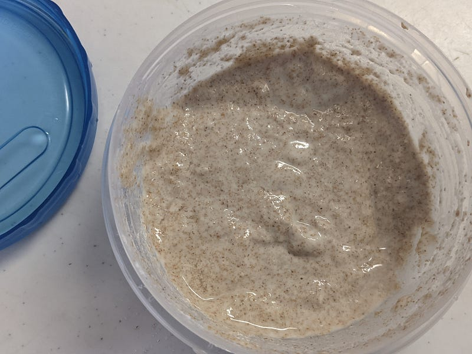
元種を作ったときと同じく、後で使うタイミングでスターターが水に浮かんだら準備OKです。そのほか、目視でたくさん泡ができていればほぼ大丈夫なはずです。
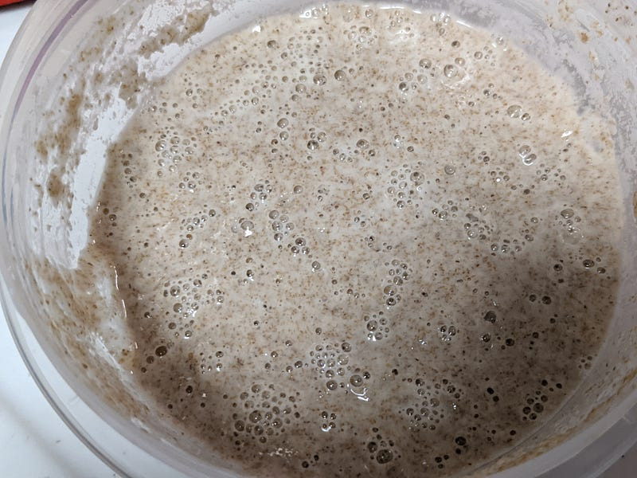
オートリーゼ
パンを焼く日の朝、起きると同時に生地の用意を始めます。まずは粉と水を混ぜる工程を行います。なお、実際の焼きはこの日の夜になります。
粉は全粒粉150g、強力粉350g。水は350gを用意します。この二つをボウルにいれ、ゴムベラ等で乾いた部分がなくなるまで混ぜます。特に練る必要はありませんが、水分がいきわたるまで混ぜます。なお水は冬の場合は30℃くらいの温水、夏は少し冷えた水を使うとよいです。
なお、計算上スターターは50gの粉と50gの水が入っており、それを加味すると生地全体の粉成分は50+150+350=550gで、水分は50+350=400g、そして粉と水の比率は400/550 = 0.727…になり、この記事の加水率は72.7%ということになります。
生地が混ぜ合わさったら、ボウルに濡れ布巾をかぶせてそのまま1時間くらい放置します。
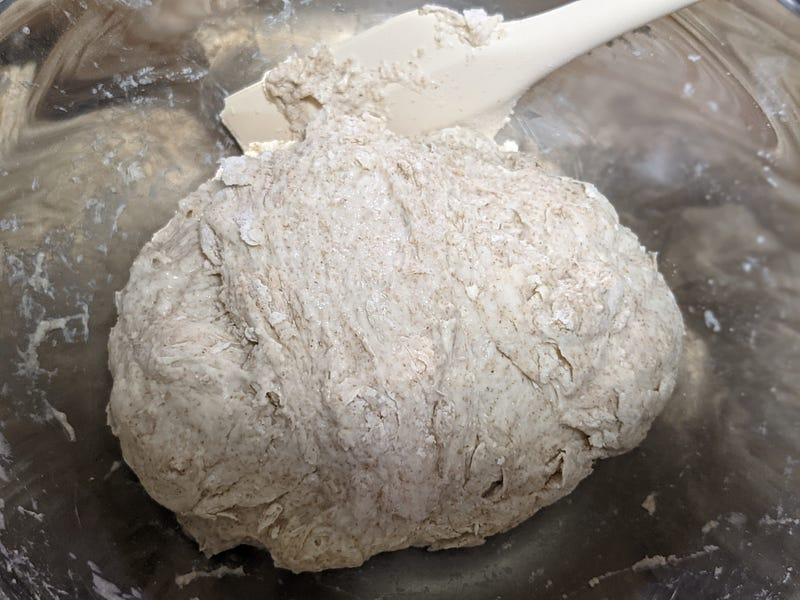
この水分が粉にいきわたる段階で多少のグルテンのつながりができて、その後捏ねる量が減ります。この工程をオートリーゼと呼びます。
生地捏ね
生地捏ねステップの目的は、生地の中にグルテンの網を作り、パンの形を保つための屋台骨を作ることです。また、グルテンはこの次の発酵ステップでつくるガスを閉じこめておく役目もはたします。
前夜に用意しておいたスターターがちゃんとできあがったら、オートリーゼが済んだ生地と一緒にスタンドミキサーに入れます。
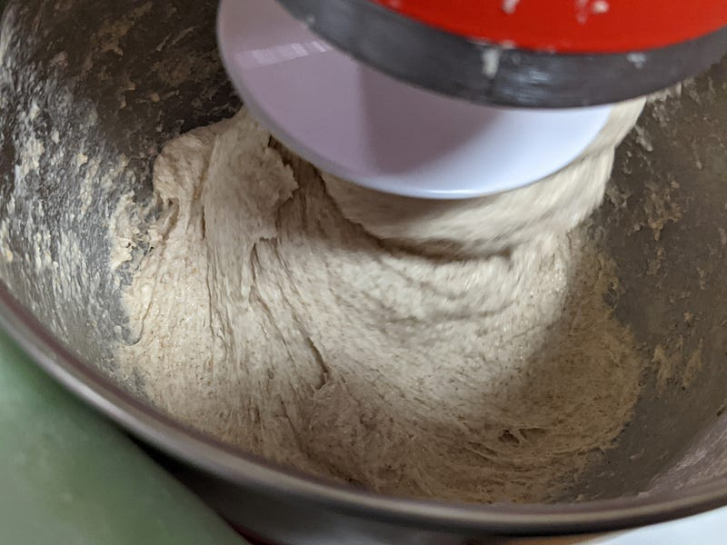
スタンドミキサーのドウ・フックをつけ、最初は低速で回して、スターターと生地を混ぜます。そのままだとなかなか混ざらないので、時々ミキサーを止めて、生地をボウルに落としてゴムベラ等で少し周囲についたスターターや生地を生地の塊に混ぜ込んでください。
だいたいひとつの生地になったら、今度は塩を10g（粉の量の2%）生地の入ったボウルに入れます。この際塩だけだとまざりにくいので、ほんの一滴二滴水を塩にかけてやるとなじみやすくなります。スターターを混ぜたときと同じ要領で塩も混ぜます。
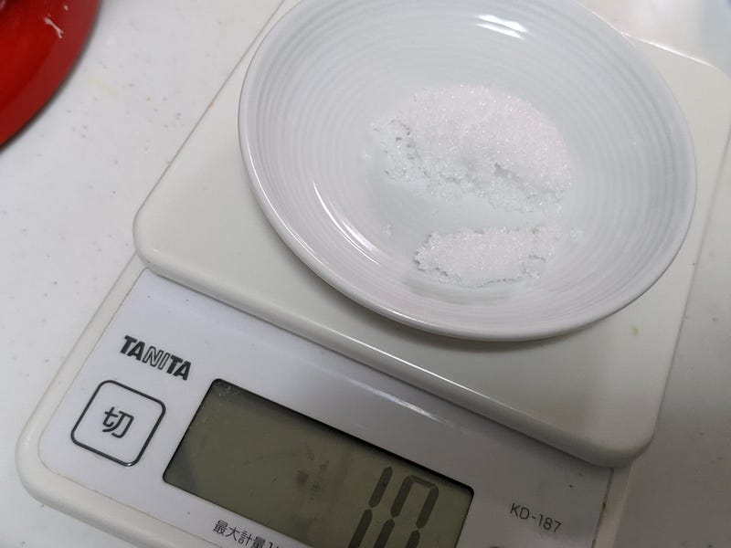
塩もだいたいまざったら、今度はミキサーの設定を中～高速に設定して、生地のグルテンネットワークの生成を促します。低速でやっているといつまでたっても捏ねが終わりません。
また、これはスタンドミキサーを使っているときの重要な点なのですが、スタンドミキサーを使って生地を捏ねると手ごねと比べて摩擦等で熱が発生しやすくなります。生地の温度が上がりすぎると発酵が早く進みすぎてせっかくの生地が全部スターターもどきになってしまうことがあります（一回やってしまった）。
夏などは特にこの問題が顕著なので、自分はスタンドミキサーボウルの横に強力な保冷剤を一個おいてこの捏ねる作業をしています。
生地がおおむねボウルからはがれて、フックと一緒に回転している状態になれば完成です。
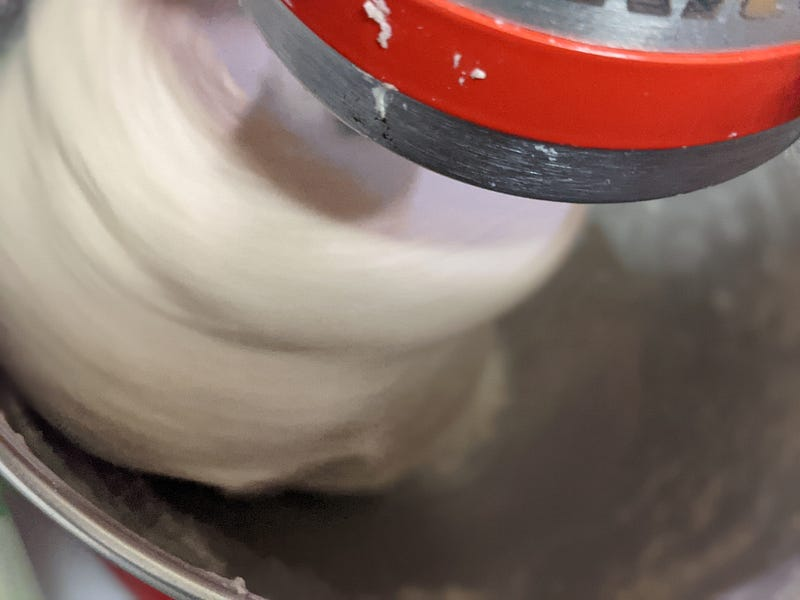
ウィンドウテスト（生地の一部をやさしく伸ばし続けたときに向こう側の光が窓のように透けてくるまで伸ばせるか、というテスト）もすると良いですが、サワードウの場合このタイミングでは厳密にウィンドウテストに拘らなくてもこのあとまだ多少グルテンが生成されるのでスタンドミキサーを使ってる場合はとにかくボウルにくっついていなければ大丈夫、というのが自分の意見です。
もっとうまくやれる人は違うのかもしれませんが、自分はこのステップでちゃんと強いグルテンの膜をつくりあげないと必ず失敗するので、ここは試行錯誤しつつとにかくちゃんとグルテンを作れるようにすると良いかと思います。
発酵（Bulk Fermentation)
発酵ステップの目的はスターターに含まれていた菌の活動をたすけ、生地の中に多くの炭酸ガスを作ることを目的としています。ここでガスができないとパンの中の小さな穴ができないですし、焼くタイミングでパン生地が大きくもりあがりません。
スタンドミキサーから生地を取り出します。スタンドミキサーについているボウルでこの後の作業を行ってもいいのですが、自分はスタンドミキサーのボウルより間口の広いボウルのほうがやりやすいので入れ替えます。
新しいボウルのほうには霧吹きでオリーブオイルを軽くふきかけておきます。これは気持ち程度ではありますが、生地がくっつくのを防ぐためです。
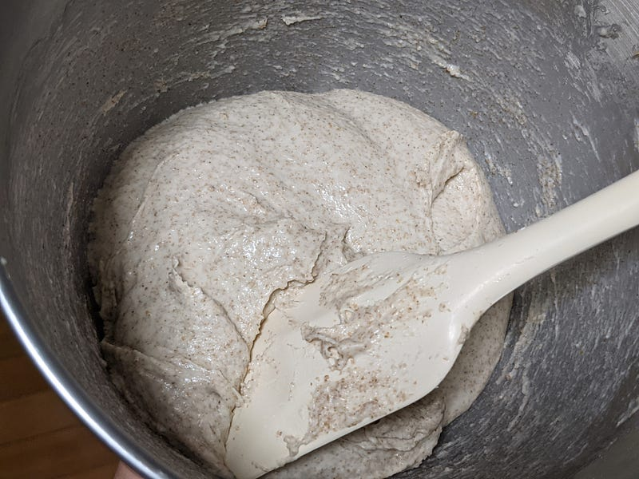
生地を移したら、生地のまわり四方向から順番に生地の中心に向かって生地を一つまみ持ち上げてのばし、それを中心にたたみこみます。ヒトデの足を中止に向かって畳み込むイメージですかね。
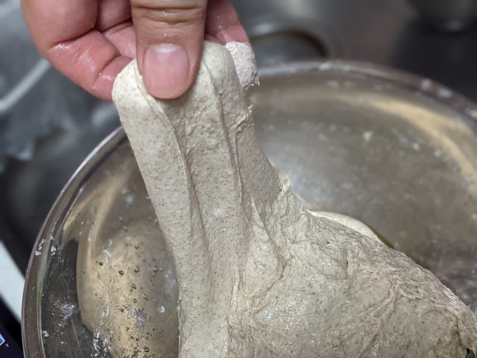
これを数回繰り返して、まとまってきたら生地をざっくり丸くまとめて、ボウルに濡らした布巾をかけて発酵を開始します。
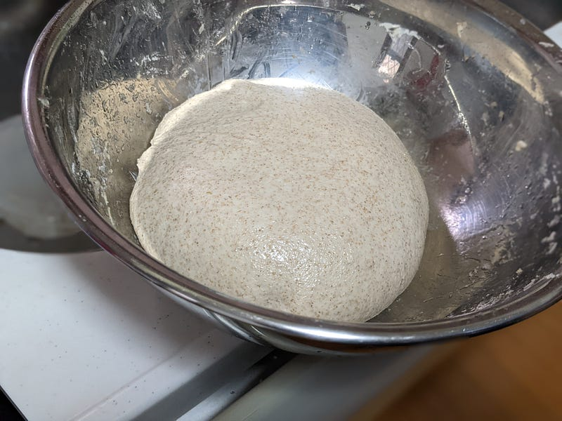
発酵の目安はだいたい生地の大きさが二倍になるくらい。もしくは生地に指をおしつけたときに、指の形が残り、ゆっくり元に戻ろうとするくらいまでです。
環境により発酵にかかる時間は変わりますが、自分は夏でエアコンをかけている部屋で6時間～9時間はかかっています。
発酵させている間、何回かにわけてストレッチアンドフォールドをします。生地の両側から下に手を入れて持ち上げて生地をのばして、それをまた畳んで丸くまとめます。
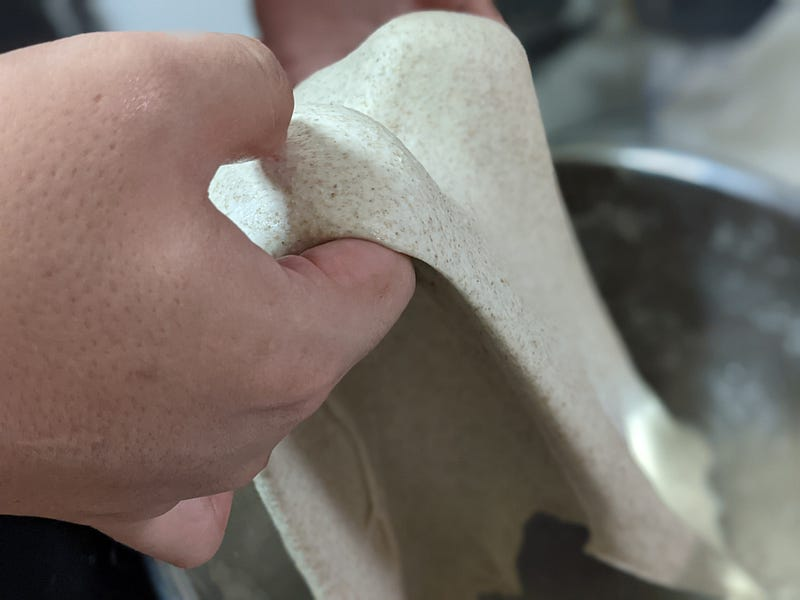
さらに90度回転させて同じ事をします。この二回をワンセットとして4～5回くらい、一、二時間おきにやります。生地の中のガスを失いたくないので優しくやりましょう。
成形
発酵が充分に進んだら、広い台に使えるスペースを確保して、軽く台に粉を打ちます。
この際、粉は強力粉ではなく、米粉のような比較的水分を吸収しづらい粉を使うと作業がしやすいです。
また、打ち粉は必要なのですが、打ちすぎても色々と問題がでてきてしまうのでうまく必要最低限になるように調整してみてください。
打ち粉の上に生地をやさしく移します。ゴムベラやスクレイパーでボウルからはがしながら台におろしましょう。
この生地を優しく延ばしながら、なんとなく長方形になるようにしていきます。自分から見て縦長になるようにしてください。
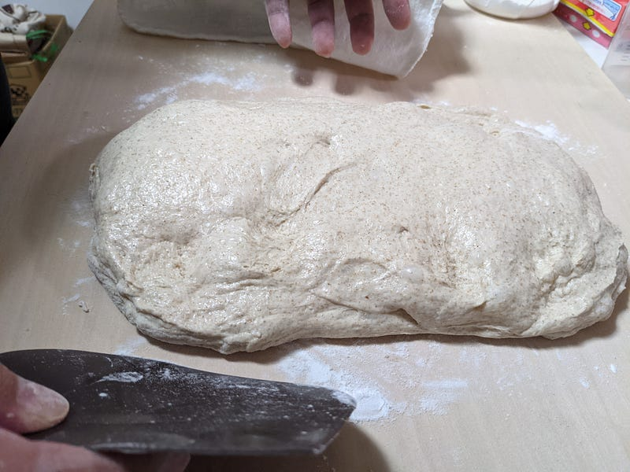
作業中に台に生地がくっついてしまう場合はスクレイパーではがしつつ、追加の打ち粉をするといいです。
長方形になったら、扉を締める感じで右側の辺を生地の中心に向かっておりこみます。そこに重なるように左側を同じように中心に向かっておりこみます。左右の順番はもちろんお好きにどうぞ！
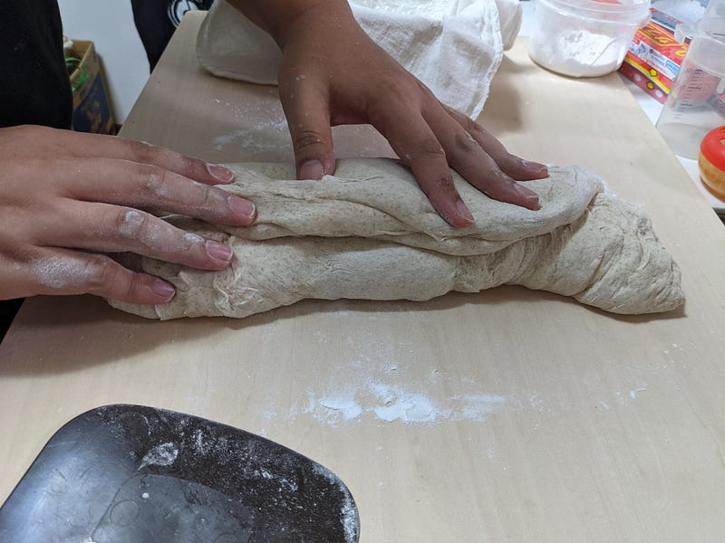
生地が重なった部分は左右の生地を指でつなぎ合わせて、段差を隠すようにします。完璧にする必要はありませんが、しっかりくっつけるつもりでやります。また、打ち粉が多かったりして生地が乾いているとなかなかくっつきにくいので繋げたいところを濡らしてから作業すると縫合しやすくなります。
ここまでしたら、生地はさらに縦長になっていると思いますが、それを手前から奥に向かってくるくると巻いていきます。
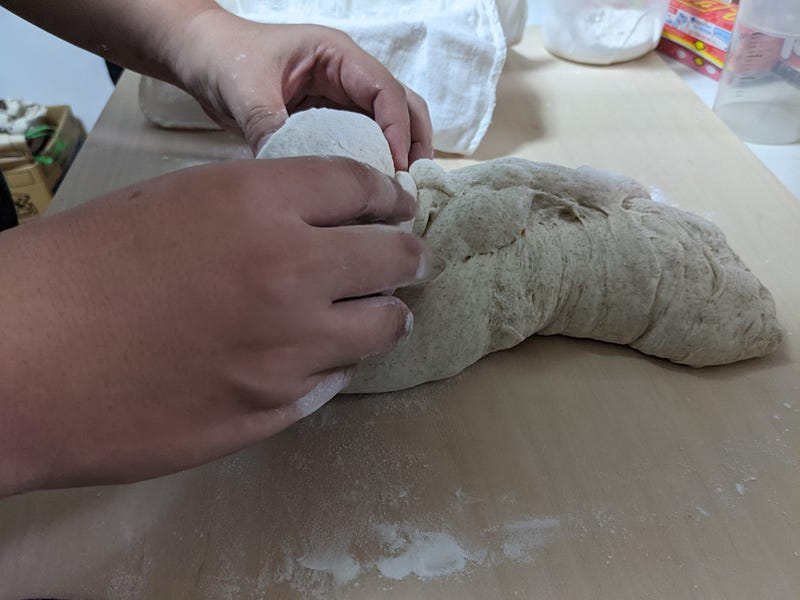
丸まったら、左右が渦巻き模様になっているかとおもいますが、これも生地同士をくっつけて縫合します。
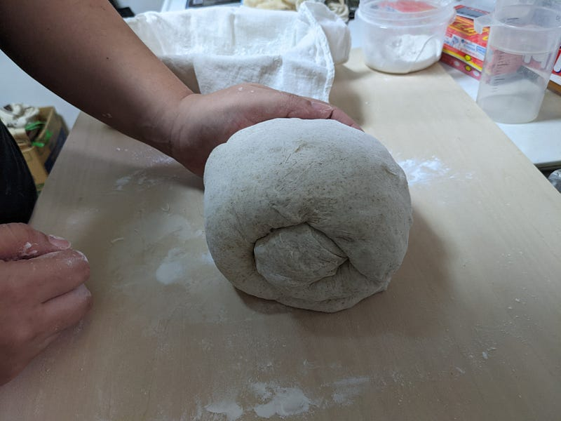
この次のステップは簡単なのですが、非常に説明しにくい。生地を左右に軽く押していくと、台に引っ張られて生地が台と生地の間に引っ張られていきます。こうすると生地の表面が引っ張られて生地に張りが生まれます。
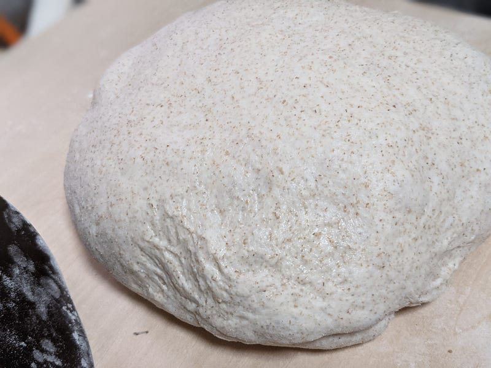
これを左右両側におこない、さらに生地を90度回転させてもう一度やります。あとはこのあとカゴに入れるので、そのカゴの形に合うように微調整します
前述のように自分は木製のカゴを型に使っています。このカゴに布巾を被せて、米粉を打ちます。
そのカゴにつなぎ目が上面にくるようにして生地を入れます。入れるときはスクレイパーを生地の下に入れてえいや、と移動させると簡単です。
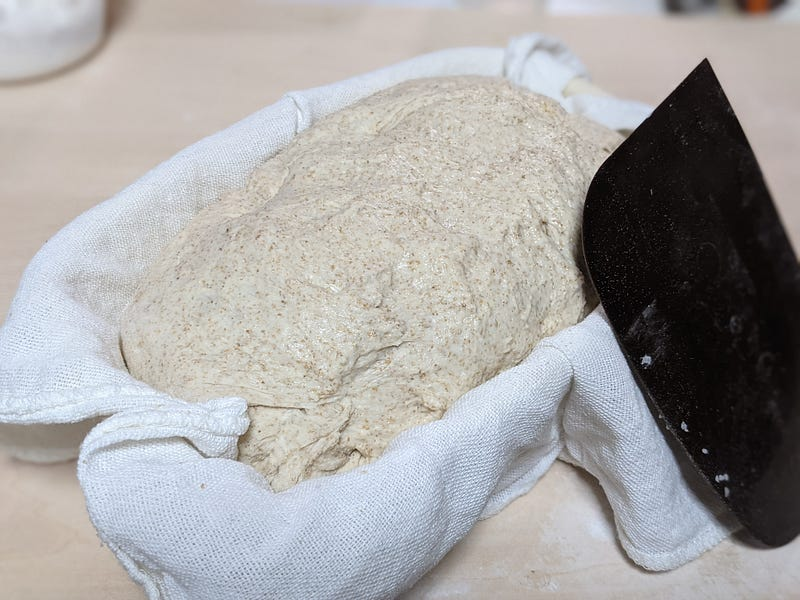
あとは湿らせた布巾を被せて、もう1、2割膨れるまで放置します。ここまでできたら生地を数時間冷蔵庫に入れておきます。
まだやったことはないのですが、この段階で冷蔵庫に入れた生地は普通に数日そのままで保つらしいです。
いずれにせよ、冷蔵庫に入れた時点で菌の発酵は格段に弱くなるので、これで発酵ステップは完了！
焼き
いよいよ焼きの時間になったらまずオーブンを290℃まで余熱します。余熱の際には蓋を取った状態のダッチオーブンも入れておき、一緒に加熱します。
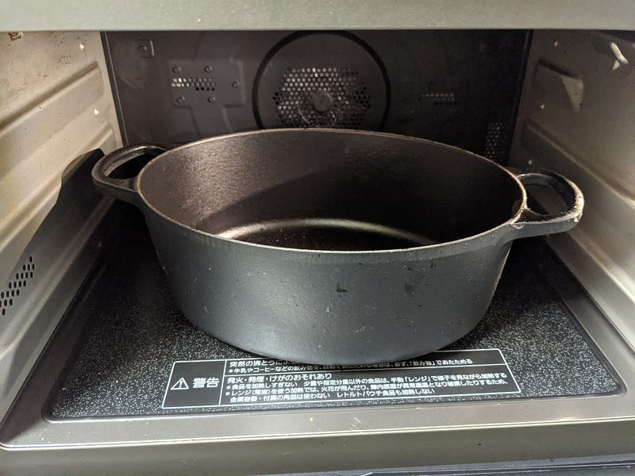
余熱している間にクッキングシートを用意します。これは生地をダッチオーブンに直接ふれさせない（ため、あとで洗うのが楽になる）だけでなく、生地をダッチオーブンに入れる際に高熱の鍋をさわらないための持ち手として使います。なのでクッキングシートはある程度の長さ（幅）が必要になります。
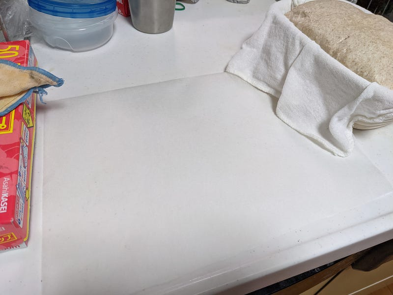
余熱が終わる頃、生地をこのクッキングシートの上にだします。カゴをひっくり返すので、縫い目のある面が底にくるはずです。
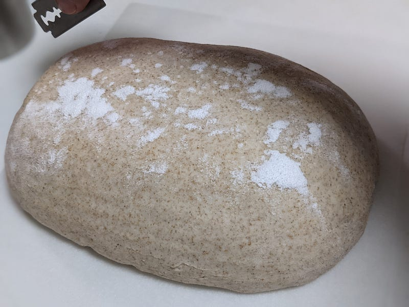
お好みで化粧粉を生地に打ち、そのあとカミソリでクープを入れます。クープは焼きの段階であがる水蒸気の逃げ道となる、生地の表面を浅くカットした部分のことをいいます。
クープがないと水蒸気は逃げ道をなくして生地のあちこちにひび割れを作ってしまうため見た目が悪くなります。
またグルテンがちゃんとできてないとこの段階でカミソリがうまく生地にはいりませんのでご注意。
クープにも色々派閥があるのですが、簡単なのはとにかく真ん中にまっすぐ一文字にカットをいれることです。
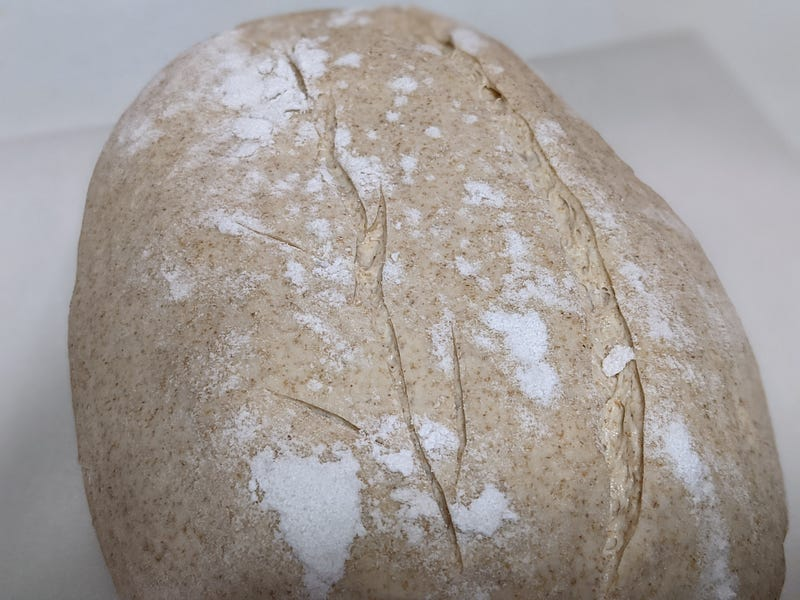
これができたら、高熱の鍋に触れないように生地をダッチオーブンに入れて、蓋をしてください。そしてダッチオーブンをオーブン内に戻して290℃で20分焼き上げます。焼き上がりをよくするためにオーブンに入れる前に生地の周りに軽く水をスプレーする派閥もいますが、自分はいまのところやっていません。
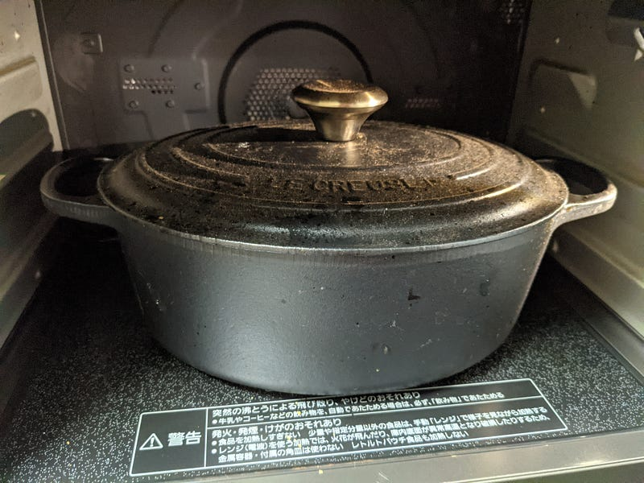
なお、成形に使ったカゴはカビる可能性が高いので、汚れていたら水洗いをしたうえで、最後の仕上げにアルコール除菌しておいてください。
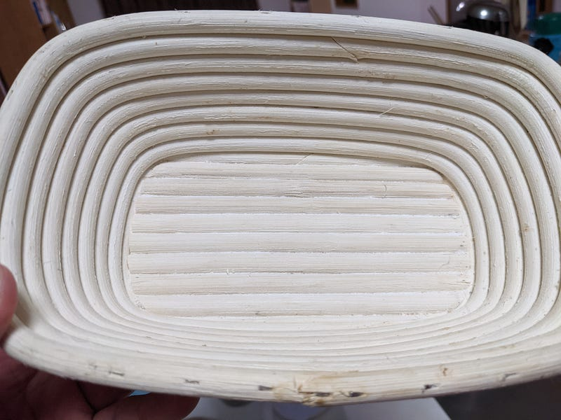
グルテンがちゃんとできてて発酵で充分な炭酸ガスができていれば、この蓋つきで焼く段階でクープを入れた部分から割れるように生地全体が膨張して、パンらしい形ができあがります。
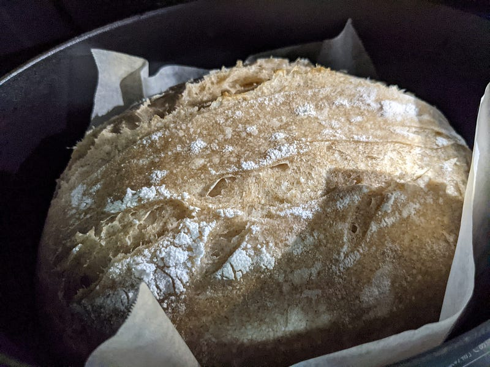
20分経ったら、今度はダッチオーブンの蓋だけとり、オーブンの温度を230℃にしてから30分焼き上げます。この時点ではまだパンに焼き色はついていないはずです。ここからの30分で色を付けます。
30分焼いたら焼き上がり。
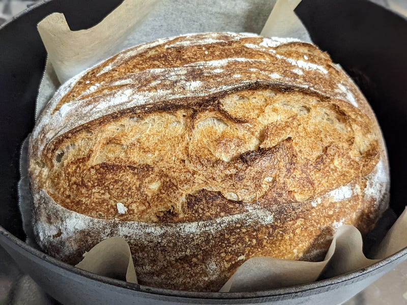
火傷をしないように鍋からパンをだし、一回完全に冷まします。
鍋から出すときは菜箸を使うのが一番簡単かなと思いますが、火傷しなければなんでもいいです。これでパンは完成！
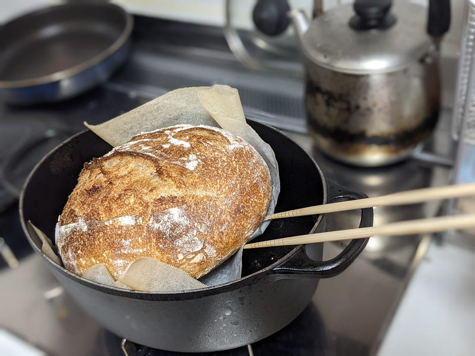
食べ方
できあがったパンは最初は外側が堅く、時間がたつとだんだん柔らかくなりますが、そのあとまた堅くなります。個人的にはまたかたくなってからのほうが食感がすきです。また、切り口から乾燥していくので、切り口を守るように布巾等をつけておくとよいでしょう。だいたい３～４日以内に食べきるとよいです。
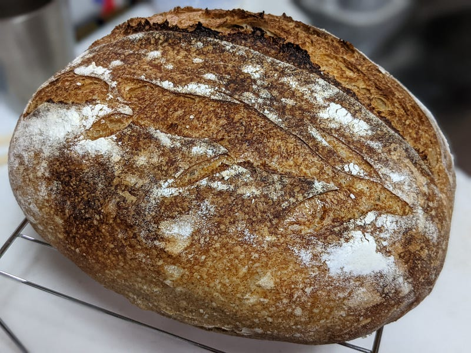
食べるときはパン切り包丁でお好みの厚さにしましょう。個人的なおすすめは1.5cmくらいかな…ピロピロに薄いと上に何も乗せられないのが辛いのと、単純に切りにくいのです。
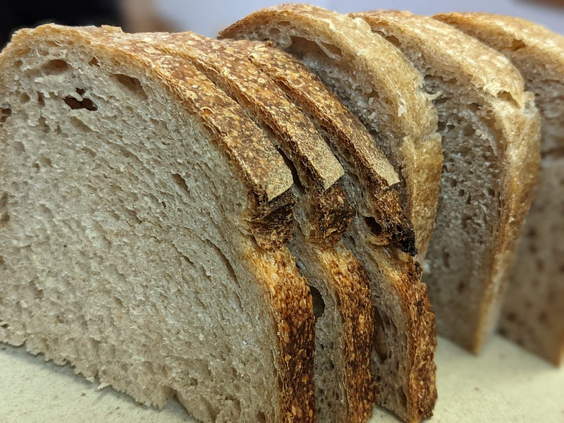
焼けてから１日くらいはそのまま食べてもいいですが、一番美味しいのはスライスしたパンをオーブンで軽くあぶってから食べることです。これをするだけで外側のこんがり感と中身のふんわりもちもち感が増して、最高になります。
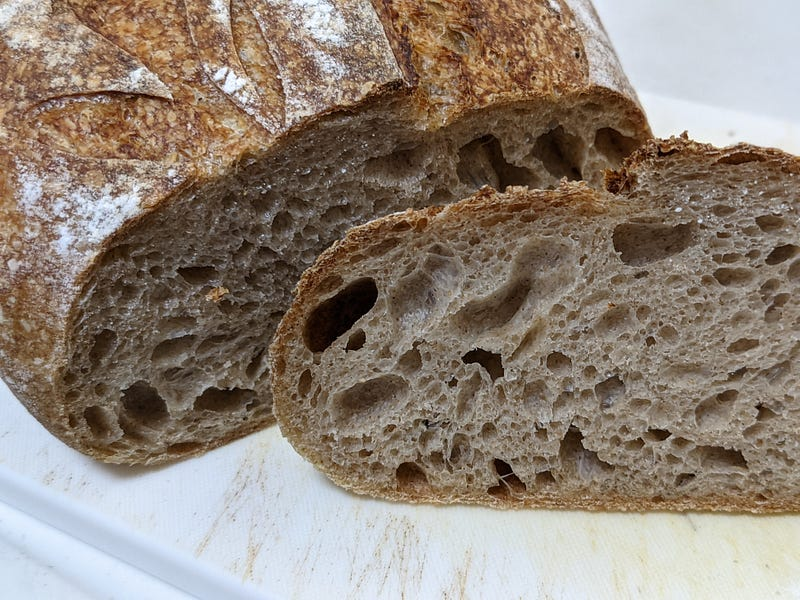
シンプルに食べるならバターやマーガリンをつけて食べます。個人的には食パンのようなバターを練り込んだ香りはよいけど平坦な味の白パンより、パン生地そのものが複雑な味わいのするパンに、それを食べるタイミングでバターをつけるほうが好きです。
あとはタルティーヌのようなオープンサンドにしたりもいいですが、おすすめはやはりコックオーバンやアヒージョなどの「ソース」がついてくるものと一緒にたべるのがいいです。
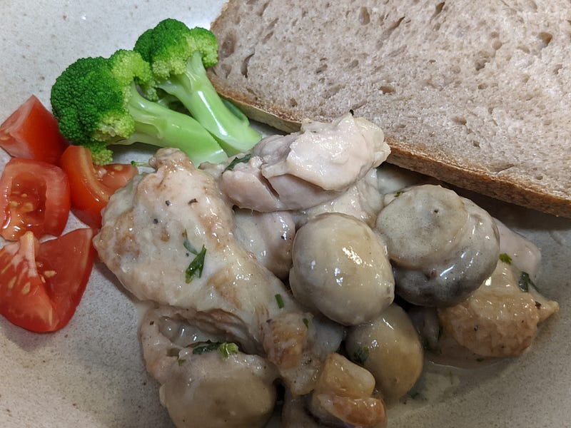
終わりに
というわけで、知識ゼロから始めて3～4ヶ月、なんとか安定して自分の満足行くところまでできるようになったので、まとめてみました。色々間違っていることはあるかもしれませんのでまた数ヶ月～数年後には改訂版を書くかもしれません。しかし自分で納得のいく味のパンが安定して作れるようにはなったので、大満足です。
パンづくりは最終的に自分の食べたいパンが食べられるだけでなく、パン生地の柔らかさや手触りなんかも癒し効果がある（？）気がするので、おすすめです。
余談ですがサワードウを作れるようになるとイーストを使ったほかのレシピがチートなのではないかと思うくらい簡単になるので、他のレシピに広げていくまえの基本習得のためにも結構よいかなと思います。あ、もちろんクロワッサンなようなペストリー系はまた異次元の難しさがあるんで、あれは簡単ではないです…自分もそのあたりまでできるように精進したいと思います。
参考
基本的な作り方はClaire Saffitzさんの動画と記事から学びました。動画のほうが分かった気にはなりますが、細かいことは記事を読んだほうがいいです。
https://cooking.nytimes.com/guides/59-how-to-make-sourdough-bread
あと、成形時のハンドリングは以下の動画がイメージを得るのに大変よかったです。上手すぎて直接参考にはなりませんが、イメージは得られます！
あと、本記事を書く前に写真を撮りつつリアルタイムでTwitterに連ツイをしてます。